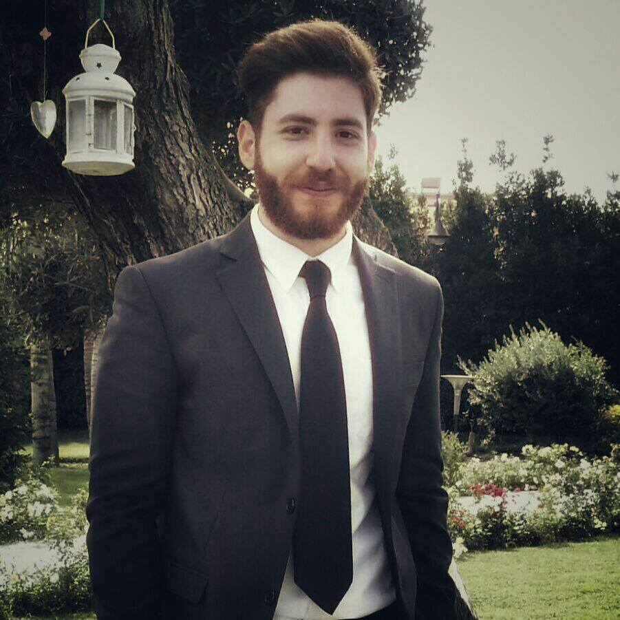

person_pinFabrizio Pezzella
location_on Via L. Sturzo 4, 80025 Casandrino
email fabri.pezzella@gmail.com
phone +39 345 123 1691
10/10/1990

Istruzione
Tecnico dei servizi di ristorazione
2005-2010
I.P.P.S.A.R.T. "Don Bosco", Frattamaggiore (Italia)
Identificare situazioni di rischio potenziale per la sicurezza, la salute e l'ambiente nel luogo di lavoro, promuovendo l'assunzione di comportamenti corretti e consapevoli di prevenzione
Definire le esigenze di acquisto, individuando i fornitori e gestendo il processo di approvvigionamento
Formulare proposte di prodotti/servizi, interpretando i bisogni e promuovendo la fidelizzazione del cliente
Predisporre menu' in riferimento alle caratteristiche organolettiche e merceologiche delle materie prime ed alla tipicita' del prodotto
Curare l'elaborazione dei piatti, con applicazione di tecniche innovative e creative
Universita' di Napoli Federico II
Scienze Informatiche
2014 - in corso
Esami effettuati con esito positivo:
Analisi Matematica I;
Fisica I;
Geometria;
Programmazione I;
Programmazione II;
Inglese.
Personal Experience
Italiano cooos